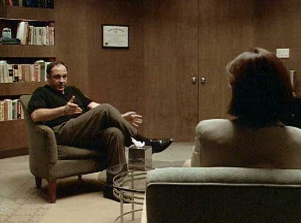
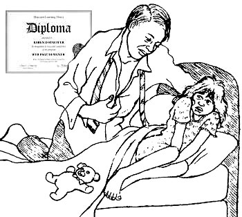
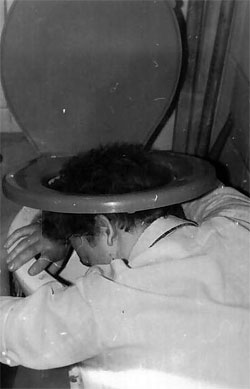

|
The identities of doctors and patients in this article have been replaced with contrived, ridiculous pseudonyms. Sexual Ethics in PsychologyThe American Psychological Association is a scientific and professional organization which serves to uphold the standards and practices of psychology in the United States. In the late 1930s, the APA established an informal ethics committee consisting of experienced, senior psychologists elected or appointed to positions of governance. These individuals were chosen not only for their superior credentials and well-documented case histories, but also for their strict moral compasses, their internal senses of right and wrong, and their own unique interpretations of what constitutes "fair play". Each serves his or her full term without salary, and none are reimbursed for any expenses incurred during the course of an investigation. Unlike a Catholic church outlet quietly shuffling child molesters from parish to parish, the APA ethics committee is not in the business of hiding or protecting rogue, predatorial psychologists. Justice is dispensed swiftly, and in the public eye. The APA Ethics Code (latest revision effective June, 2003) stipulates quite clearly that psychologists must not engage in sexual intimacies with their clients or patients. Nor can they have sex with individuals they know to be close relatives, guardians, or "significant others" of clients or patients. Prematurely terminating therapy with a patient in order to circumvent this code of conduct would indeed be considered a breach of ethics. Furthermore, psychologists cannot accept as patients any persons with whom they've had sexual relationships in the past, and they cannot engage in sexual intimacies with former patients for at least two years after therapy has come to an unequivocal close. Psychologists who engage in such activity after two years have elapsed bear the additional burden of demonstrating that there has been no exploitation or abuse, in light of all relevant factors -- and good luck with that. The question often arises whether, after terminating therapy, the two people are "ethically free" to commence a sexual relationship. Ethics committees have pursued cases known informally as the "you're cured; your place or mine" variety.
When a licensed, board-certified psychologist in the United States behaves inappropriately or demonstrates questionable motives resulting in an official complaint, he or she must navigate an exchange with the ethics committee. The dilemmas faced by this board can be extremely difficult and sensitive -- not only in terms of the registered complaint, but also with respect to clients who are now twice as distressed, twice as fragile, or even more vulnerable than they were before undergoing many years of flawed, faulty psychological care. The word "psychologist" (as defined in the General Guidelines for Providers of Psychological Services published by the APA) can mean only one thing: an individual with a doctoral degree in psychology from an organized, sequential program in a regionally accredited university or professional school. As it turns out, there exists a seemingly infinite number of ways a practicing psychologist can screw it all up for everybody, lose his or her license, and exit the profession in disgrace. The most obvious violations are similar to those you'd find in the Jamba Juice employee handbook. Performing your duties under the influence of alcohol, for instance -- or sneaking bonghits from behind the couch to the extent that your professional duties cannot be carried out. Those alone are grounds for strict fines, penalties, sanctions -- even loss of one's license. In eleven states, much to the chagrin of disgraced therapist Dr. Haywood Jablowme, Ph.D., practicing under a false or assumed name is strictly prohibited. Three states have even begun clamping down on the advertising techniques used to secure and woo new clients, so if your therapist offers you a punch card good for one (1) tube of Dutch boner cream after ten hours of sit-down chitty chat, it could very well be a matter for the ethics committee to look into. Fraud or deception in rendering services, obtaining fees, or accepting rebates for professional referrals are notable conduct violations indeed. "Low-carb lifestyle" psychiatric treatment continues to be wholly fraudulent in all fifty states. Nonetheless, psychologists have been known to willfully, even maliciously engage in acts they know to be in violation of the ethical standards of their profession. Self-serving motives like the need to get laid are common among those guilty of ethical breach. Some psychologists are not even required to be licensed -- such as psychology professors or research psychologists. These individuals often fall through the cracks, avoiding sexual scrutiny altogether, and are subject only to criminal law or the quality control mechanisms of their workplace. The express prohibition against sexual intimacies in the 2500-year-old Hippocratic Oath was not duplicated by the APA until only a few years ago. While psychotherapy literature has acknowledged the "transference" of feelings among clients and therapists, erotic contact has gone unmentioned until relatively recent times. Charges of sexual exploitation against psychotherapists are increasing, no doubt due to media publicity and the forceful denouncement of client-therapist sex from within the profession. A 1931 letter from Sigmund Freud to his student reveals issues that were being raised fifty years ago: "You have not made a secret of the fact that you kiss your patients and let them kiss you... now I am assuredly not one of those who from prudishness or from consideration of bourgeoisie convention would condemn little erotic gratifications of this kind, but that does not alter the fact that with us a kiss signifies a certain erotic intimacy. A number of independent thinkers will say to themselves, why stop with a kiss? Certainly one gets further when one adopts pawing as well, which after all doesn't make a baby. And then bolder ones will come along who will go further -- to peeping and showing -- and soon we shall have accepted in the technique of analysis the whole repertoire of petting parties, resulting in the enormous interest in psychoanalysis among both analysts and patients." However, sexilicious ethical problems can sneak up on you, as demonstrated by the following case studies. These dilemmas may be wholly unforeseen, the result of inexperience among young psychologists or merely the ignorance of specific principles. In small towns, for instance, where you're the sole practitioner of psychology and the only therapist for miles around -- how do you treat the patient who works full-time at the video store where you rent five pornographic videotapes each night? A simple non-sexual case might be a good starting point: CASE 2: Dr. Hugh G. Rection, who had a longstanding and intense dislike for a colleague, complained that the colleague engaged in unprofessional conduct by telling people he had "shit for brains" and had, in all likelihood, a small penis. When the committee asked the colleague about the incident, he countercharged that Dr. Rection had been making horrendous remarks about him for years. In this instance, the committee realized that it could not resolve the ethical issues or the intense interpersonal difficulties between the two doctors, given the limitations of its scope and function. A duplicate letter was sent to both psychologists indicating it was withdrawing from the case, and noting that it was a no-win situation for all concerned. These disputes can be likened to a college student complaining that she got a B when she clearly deserved an A -- the sort of assessment virtually impossible to resolve with committee intervention. Ethical violations of a sexual nature are frequently more vivid: CASE 3: Leela Loosegoose worked as a receptionist and secretary for Dr. Rod Popper, Ph.D. Dr. Popper approached her about acting as a sexual surrogate for some of his male clients. Loosegoose agreed, and allegedly so enjoyed the surrogate work that she began to offer such services on a freelance basis in addition to her work for Dr. Popper's clients. Subsequently, her spouse filed for divorce and sued for custody of their two children, citing her work was similar to that of a prostitute. Loosegoose sought emotional damages from Dr. Popper, later claiming he seduced her. Indeed, the American Association of Sex Educators, Counselors, and Therapists have developed a code of ethics and training guidelines for psychologists practicing in this highly specialized field. Perhaps the most dramatic focus of concern in the practice of "sex therapy" involves the use of sexual surrogates: i.e., sexual partners used by mental health professionals who assist clients in the engagement of a variety of social and sexual activities for a fee. This practice can lead to substantial ethical and legal complications. In some states, a psychologist who refers a client to a sex surrogate may be liable for criminal prosecution under local prostitution statutes -- even charges of rape, if some aspect of the relationship goes wrong, or is brought to the attention of a zealous district attorney. Substantially harmful publicity can initiate deeply troubling shockwaves throughout the psychological industry. Even sexual identity can be called into question: CASE 4: Dr. Dick Pincher, Ph.D. agreed to treat Cecil Q. Prissy, age 5, whose parents were concerned about his effeminate behaviors. Dr. Pincher devised a behavioral approach for implementation at the office and at home involving toy choice, dress-up play, and various other activities of a stereotypical sex-role nature. Dresses were worn, make-up and cosmetics applied, feminine wigs donned, and photographs taken for the child and his parents to discuss later. When reports of Pincher's project were published in a professional journal, a storm of protests ensued. The use of coercive persuasion and "deprogramming" are often on par with hypnosis. In general, it is unethical for a psychotherapist to coerce a client into treatment or to force certain goals or outcomes against the client's wishes. Often these ethical dilemmas revolve around the matter of client's involvement in making choices rather than the technique itself -- and where a child's sexual identity comes into play, most areas are regarded as judicial thin ice. CASE 5: Don Splatter, Ph.D. designed an aversive treatment program to deal with severely retarded residents of a state school who were urinating in the hallways. The program involved a deterrent: a quick spray of ice water administered from a small squirt bottle -- right into the face of a patient caught using a corridor as a bathroom. Some of the resident attendants were inadequately trained in the subtler applications of the technique. Ignoring Splatter's instructions, employees instead pulled a perpetrator's pants down and pushed his face repeatedly into a toilet bowl while flushing it several times. In this instance, clearly the attendant did not discriminate between the intended shock value of the ice water spray and the sexually sadistic, punitive act of holding a person's head in the toilet. Unfortunately, not all psychologists who attempt to employ behavioral techniques are well trained in underlying learning theory. Confusion on the distinction between the concepts of punishment and negative reinforcement is only one example of a common problem often resulting in the need for committee review. Psychologists should show careful concern for ethical problems inherent in the use of aversive stimuli, spray bottles, and toilets. CASE 6: Barbara Streisand sought a consultation from Dixon Cox, Ph.D. shortly after her divorce to discuss her inability to control her rage toward her spouse. Cox, recently divorced himself, did not mention his similar situation to Streisand. As Dr. Cox listened to her vindictive attacks against her ex-husband, he found himself tensing considerably and biting his lip until it began to bleed onto his shirt collar. Minutes later, Mrs. Streisand screamed and fled from the office, later writing to an ethics committee that Dr. Cox was a vampire. In cases where the psychologist is found innocent of ethical misconduct, it is the complainant who misunderstood either the psychologist's conduct or the psychologist's responsibilities in certain difficult situations. At other times, while the psychologist's behavior could hardly be described as exemplary, his behavior might not be judged to be outside the realm of tolerable human expression given the context of the situation. Presently there are six disciplinary levels of misconduct as characterized by the APA, ranging from probationary to expulsion: LEVEL 1A: Educative Advisory. Not clearly unethical behavior, but in poor taste or insufficiently cautious. These offenses fall into gray areas, often dealing with newly emerging issues or problems. LEVEL 1B: Educative Warning. A "cease and desist" notice from an ethics committee might accompany a finding that a mild or minor infraction had occurred. LEVEL IIA: Reprimand. A finding of clearly unethical misconduct, when the psychologist "should have known better," although the consequence of the action or inaction may have been minor. LEVEL IIB: Censure. Deliberate or persistent behavior that could lead to substantial harm to the client or public -- although little harm may have occurred. LEVEL IIIA: Stipulated or Permitted Resignation. Continuing or dramatic misconduct producing genuine hazard to clients, the public, and the profession; questionable motivation to change or demonstrate concern for the behavior in question. LEVEL IIIB: Expulsion (Voided Membership). Individual clients or others with whom the psychologist worked are substantially injured with serious questions about the potential rehabilitation of the psychologist in question. No instance of a male client pressing charges of sexual exploitation against a female therapist has ever been reported by the APA, although two male clients have submitted formal complaints against their male therapists. If an investigation reveals no evidence of wrongdoing, the psychologist and complainant are so informed, and the case is closed. Despite their most vigorous investigatory efforts, ethics committees may not be able to obtain sufficient evidence to render a verdict one way or another. In lieu of credible witnesses or supporting documentation, it all comes down to one person's word against another. |
 CASE
1: Dr. Hardon was charged by several women with sexual exploitation. He
admitted engaging in sexual relations with these women, but denied that he was
exploitative. He claimed that they all needed sexual activity to function effectively,
and then attempted to elucidate vague theoretical justifications regarding why
he was the appropriate person to provide these services. Despite claims by his
clients that he forced his sexual attention on them and that the experiences
were traumatic, the doctor continued to deny wrongdoing or poor professional
judgment. The only issue on which he would agree was that his form of therapy
"did not work on these four women, but it has worked beautifully on scores
of others".
CASE
1: Dr. Hardon was charged by several women with sexual exploitation. He
admitted engaging in sexual relations with these women, but denied that he was
exploitative. He claimed that they all needed sexual activity to function effectively,
and then attempted to elucidate vague theoretical justifications regarding why
he was the appropriate person to provide these services. Despite claims by his
clients that he forced his sexual attention on them and that the experiences
were traumatic, the doctor continued to deny wrongdoing or poor professional
judgment. The only issue on which he would agree was that his form of therapy
"did not work on these four women, but it has worked beautifully on scores
of others".